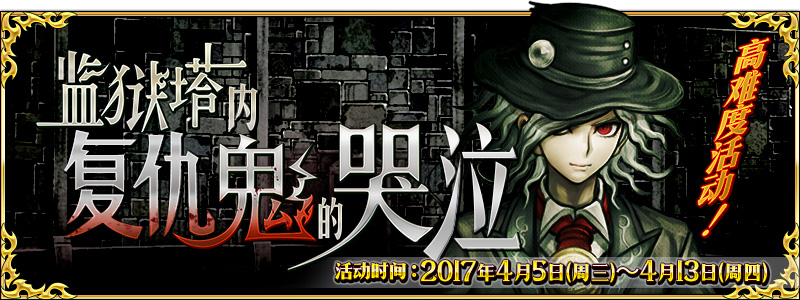

-
- ★☆★
- 引用本站的翻譯請註明本站名稱或網址
本站不像其他網站可以分工合作統整資料
而是獨自一人憑藉熱忱製作分享
引用本站的翻譯請註明本站名稱或網址
-
- ★☆★
- 本週Master任務(12/3 23:00～12/10 22:59)
任務 獎勵 No.1：通過這週全部的Master任務 x2 No.2：執行30次友情點數召喚 x2 No.3：擊倒30名敵人(Servant及一部份Boss除外) x2 No.4：擊倒15名持有『魔性』特性的敵人(Servant及一部份Boss除外) x2 No.5：擊倒15名『Rider』職階的敵人(Servant及一部份Boss除外) x2 No.6：擊倒15名『Caster』職階的敵人(Servant及一部份Boss除外) x2 No.7：擊倒15名『Assassin』職階的敵人(Servant及一部份Boss除外) x2
- ★☆★
- 【重要】Ver.1.11.0以後，關於從推薦環境以外的遊玩
-
- ★☆★
- 繁中(監獄塔)/簡中版(超極☆大南瓜村)活動資訊頁面
測試頁面，不保證其後之維護

- 9/27
- 【重要】關於於iOS 11的應用程式更新
- 12/1
- 【來自迦勒底廣報局】關於12月中旬～12月下旬的遊戲更新
☛「亞種特異點Ⅳ」新Servant預定12/6(三)判明真名！
- 11/29
- 「亞種特異點Ⅳ 禁忌降臨庭園 塞勒姆 異端的塞勒姆」開幕！


| ・關於niconico生放送播送特別節目發表的新情報 | ・關於能用12月交換券(2017)交換的道具 | ||
| ・11/28遊戲更新(21:00實施) | ・11/29維修公告(12:00實施) | ・11/30緊急維修(3:15實施) | ・12/1程式更新(Ver.1.13.1) |
◆Servant◆
◆概念禮裝◆
◆隱藏數值◆
・新增職階：？？？
・新增敵人：食屍鬼、遠古食屍鬼、灰狼、夏塔克鳥
・新增敵人：食屍鬼、遠古食屍鬼、灰狼、夏塔克鳥
◆活動相關◆
- 11/15
- 期間限定活動「復刻:第二代是Alter醬 ～2016聖誕節～ 輕量版」＆「1100萬DL突破宣傳活動」


◆關卡◆
◆活動相關◆
| 官方推特 |
|